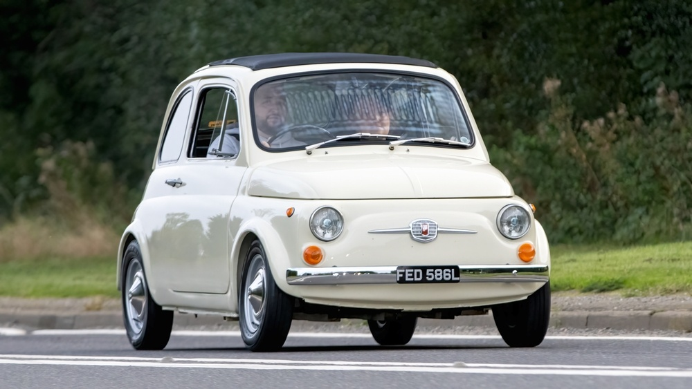
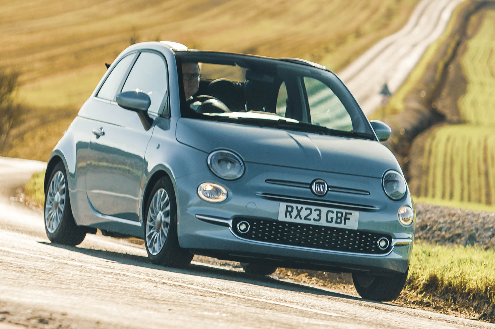
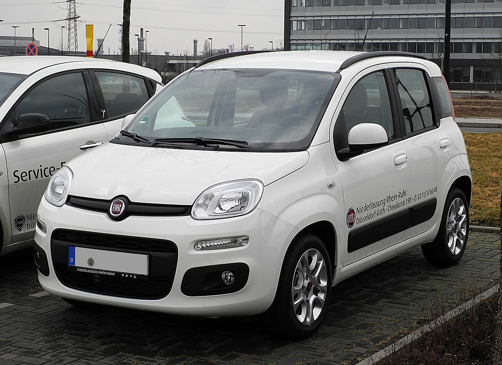
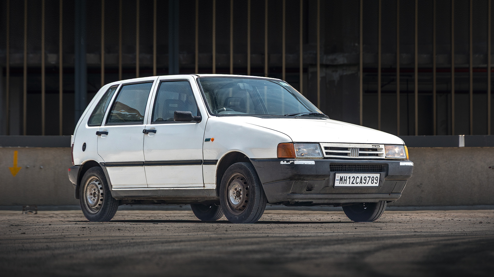
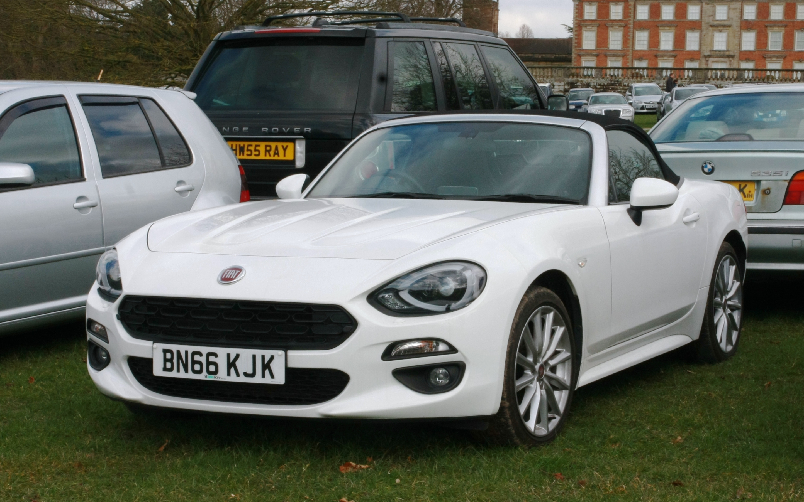
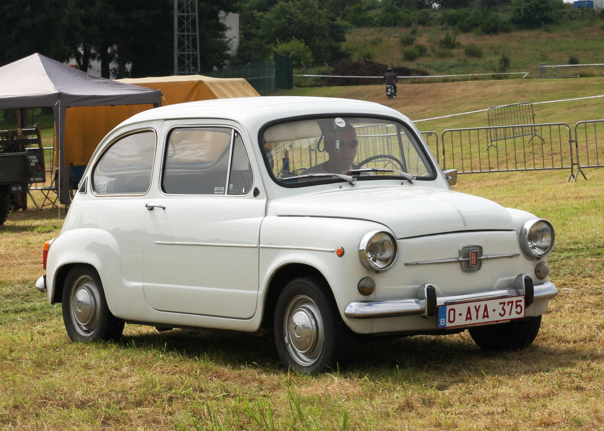
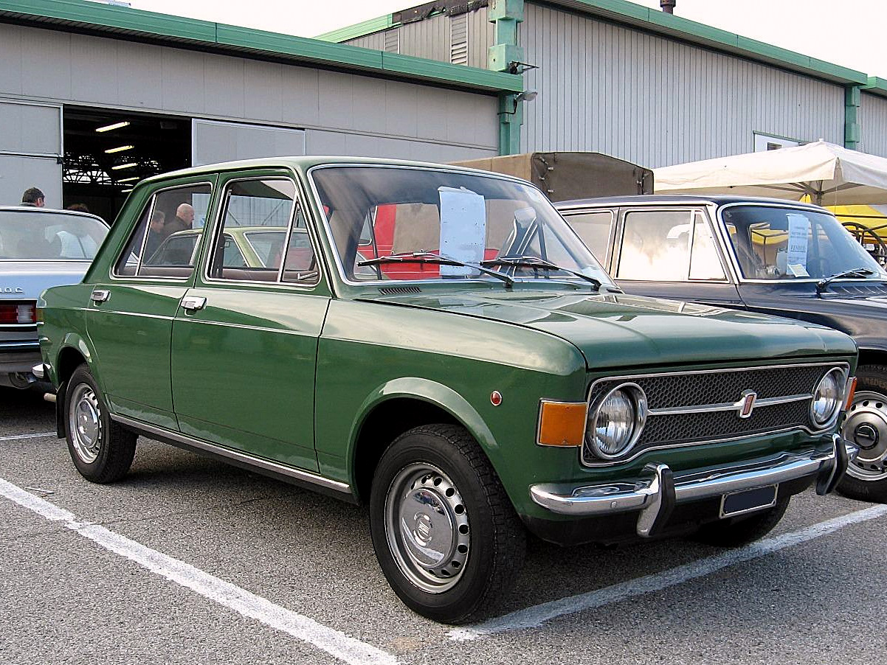
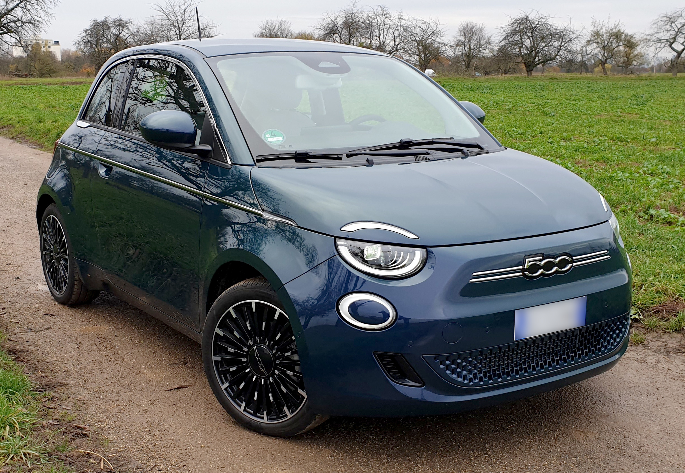
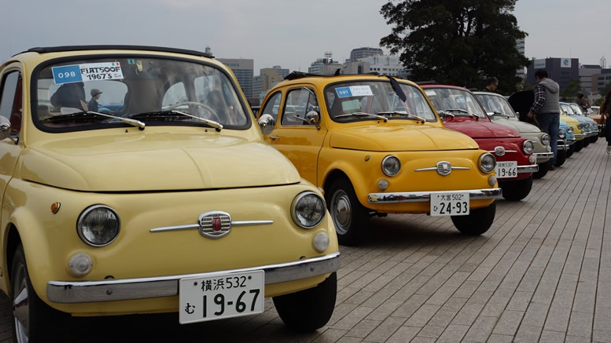
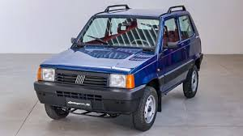

Fiat
Italy's Car
Founded: 1899
Country: Italy
Icon: 500
City Car King
Italy's Car
Fiat (Fabbrica Italiana Automobili Torino) was founded in 1899 by a group of investors including Giovanni Agnelli. It became the backbone of Italian industry and the car that mobilized Italy.
The first Fiat, the 4 HP, was produced in 1899. Agnelli quickly expanded, building a massive factory in Lingotto in 1923 – the first multi-story car factory with a test track on the roof.
Between the wars, Fiat built a range of cars from small (508 Balilla) to luxurious (518). The company also produced aircraft engines and military vehicles.
After WWII, Fiat became Italy's answer to Ford – affordable cars for the masses. The 500 "Topolino" (1936) was already a pre-war success. The 600 (1955) and the Nuova 500 (1957) made Italy mobile.
The 500 was tiny, cheap, and charming. It put Italy on wheels, just as the Model T did for America. Over 4 million were built by 1975.
The 1960s and 1970s brought the 124 (which became the Lada in Russia), 128, and 127. Fiat became Europe's largest carmaker. The 1971 127 was Car of the Year.
The 1980s introduced the Panda (1980) and Uno (1983) – both designed by Giorgetto Giugiaro, both massive hits. The Uno was Car of the Year 1984.
Financial troubles in the 2000s led to a revival with the new 500 (2007). Designed by Frank Stephenson, it captured the original's spirit and became a global success.
Today, Fiat is part of Stellantis. The 500 is now electric (500e), and the Panda continues. Fiat remains the heart of Italian motoring.
"Fiat is Italy, and Italy is Fiat."- Giovanni Agnelli

1957-1975
The car that mobilized Italy. Tiny, affordable, and charming. Over 4 million built. The original "Cinquecento."

2007-present
The retro revival that saved Fiat. Captured the original's spirit with modern engineering. Global success.

1980-present
The simple, practical, clever city car. Designed by Giugiaro. Over 7 million sold. Still in production.

1983-1995
1984 Car of the Year. Stunning Giugiaro design, efficient packaging, and massive success.

1966-1985, 2016-2019
Beautiful Pininfarina roadster. The original was a classic. The modern version shared with Mazda MX-5.

1955-1969
Predecessor to the 500. Rear-engine, practical, and affordable.

1969-1985
1970 Car of the Year. Front-wheel drive, modern design, spawned many derivatives.

2020-present
The electric 500. All-new platform, 199 mile range, retains all the charm.
The Fiat 500 is more than a car – it's a cultural icon. It represents Italian style, ingenuity, and La Dolce Vita.
Designed by Dante Giacosa, the Nuova 500 was a masterpiece of packaging. Its tiny 479cc twin-cylinder engine was in the rear, saving space. It was cheap to buy and run. It appeared in films, on posters, and in the hearts of millions.
Designed by Frank Stephenson, the new 500 captured the original's spirit perfectly. It became a global style icon, winning Car of the Year 2008. The 500e electric version continues the legacy.

The Panda, designed by Giorgetto Giugiaro, is a masterpiece of functional design. It's simple, practical, and brilliant.
Rounder, more modern, still practical. 100HP version was a hot hatch favorite.
Current Panda, still boxy, still clever. Cross version adds rugged styling.
The Panda is Italy's best-selling car for years. It's the car for everyone – families, businesses, and adventurers.
